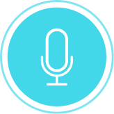
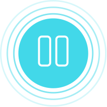

New Recording
Record a new audio file:
Tap the button to start recording
Recording...
Recording Paused
{{fileRecorded.getName()}}


{{elapsed}}
{{timeDisplayOnPause}}
Your File has been succesfully recorded
Play
Pause
Play
Delete
Record New File
Upload To The Cloud